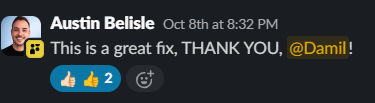
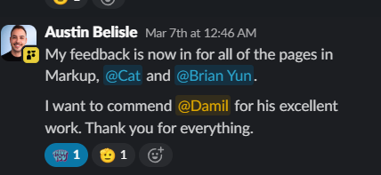
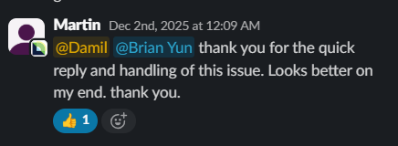
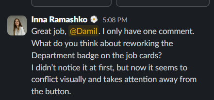

I already build for your clients. I have started designing for them too. I would like to do both full time as your Design Engineer.
I design it. I build it. And I am building the tool that makes it cheaper to ship.
Design that already knows how it will be built
Most Webflow projects pass through a designer, then a developer, then back for fixes. A design engineer removes the second and third step.
Fewer handoffs
I design with Figma auto-layout and variables, then build in Webflow. Spacing, type and states match because the same person set both.
Designs that ship
I know what Webflow does well and what costs extra. Those limits shape the design from the first frame, so there are fewer late surprises.
Already inside the projects
I work on DataVisor, Attentive, Findem, Earned Wealth, OJM Migration and SE Brands today. I know the clients, the codebases and the people.
The most context on your biggest accounts
I have shipped on all five of your top-paying clients. On three of them I built the site from scratch.
-
Shipwell
Recently helped the site become MCP ready by replacing every page with a component library.
MCP-ready -
Attentive
I built the site from scratch. I know every template and integration, so an MCP-ready rebuild starts with no discovery phase.
Built from scratch -
DataVisor
Also built from scratch by me. Same story: the people who know the codebase best are the fastest to restructure it.
Built from scratch -
TSIA
Part of my build work for the studio, with the context to take the next request without a ramp-up.
Build client -
Findem
I built this site from scratch too. When a bot sent thousands of spam submissions through a form, I stopped it the same day.
MCP-ready means the site is built from a clean component library, so AI tools and agents work with defined parts instead of one-off markup. Shipwell is done. Attentive and DataVisor are the obvious next two, and nobody knows those sites better than I do.
I am the one who takes the difficult problems
When something breaks on a live client site, I want it on my desk. Here is a recent one.
A bot flooding a client's form
A Findem form was hit with thousands of spam submissions. Turning on Webflow's bot filter stopped real users from clicking Submit, so the team needed a fix the same morning.
The client's own words on the result: a great fix.
-
Fix 1
A honeypot field and a submission-time check. The bot found a way around it within a day.
-
Fix 2
Behavioural checks on mouse movement and typing rhythm. Real people move the mouse and type unevenly. This bot barely moved and typed at a perfectly steady pace.
-
The trick
A caught bot is blocked before it reaches Webflow and shown a normal success message, so it never learns it was detected.
-
Fallback
A Cloudflare Worker with Turnstile and rate limiting, ready if the volume returns. It verifies everything server-side.
What the people I work with say
Straight from Slack, from the clients and teammates on the other side of the work.




Screenshots from client and team Slack threads
Design work for the studio, so far
Each of these was designed and reviewed inside your process. The Daylight pages are live in the staging build.
Daylight AI: Integrations
Page designed from the wireframe inside the client's design system, reviewed by Inna and Artem, then built in Webflow.
View staging page →Daylight AI: Careers
Second page in the same system. Faster than the first, because the design system was already learned.
View staging page →Yoga With Adriene
About page on a two-hour estimate, then Free Yoga and Calendar pages. I recorded a walkthrough of the decisions behind the About page.
Open in Figma →ADR Registry: About
Designed alongside Inna's own version of the same page, so the two could be compared and discussed afterwards.
Open in Figma →Design that stays profitable
Inna asked how long a page takes me, so the design stage stays inside the project budget. These are my real times.
One page, first pass
Measured on the Daylight Integrations page, including one round of changes.
Learning a new system
One-time cost per client. It shrinks on every later page in the same file.
Design to dev handoffs
The person who designs the page also builds it, so there is no spec to write and no rework to chase.
A local dev harness to cut build cost
In progressI am an engineer as well as a designer. I am building a harness that runs locally on each person's machine, which is where most of your Webflow development already happens.
The aim is to take repeated build work off the clock without adding another hosted tool or per-seat bill.
- Runs on the deviceNo new infrastructure to host, and nothing to onboard beyond installing it.
- Targets repeated workThe steps every Webflow build repeats are the first ones to automate.
- Built with the teamI will pilot it on my own projects first and share the measured hours before anyone else is asked to use it.
Move me from contractor to full-time Design Engineer
I would like to move from contract to full-time as your Design Engineer. I am happy to start by taking design on a project I already build, so the split between design and dev is clear from day one.
Let's talk about it
Twenty minutes is enough for me to walk through the work and hear what you would need to see.
Book a 20-min call